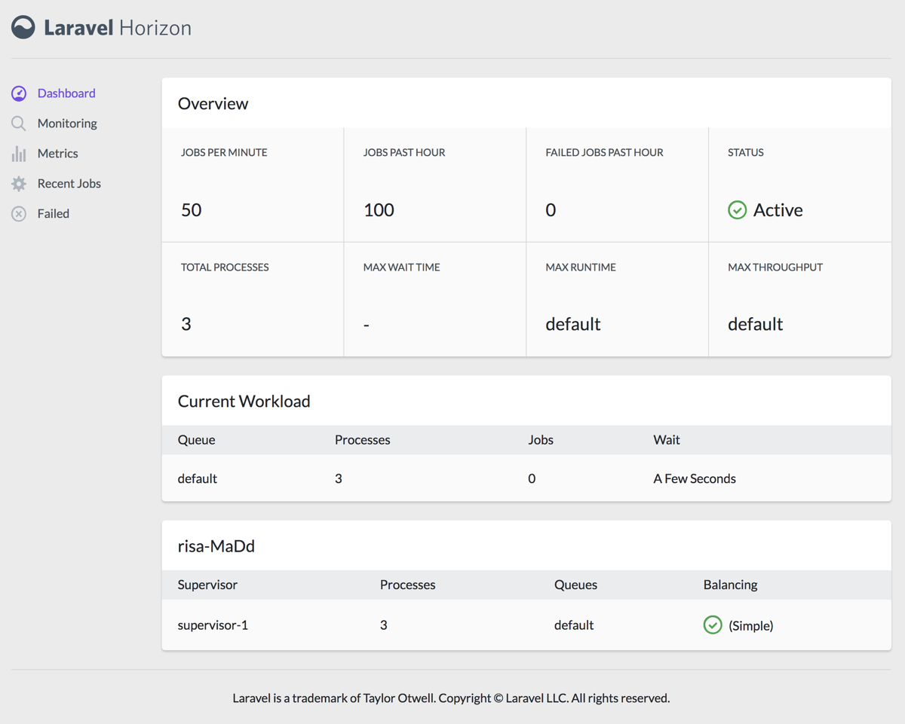

Horizon provides a beautiful dashboard and code-driven configuration for your Laravel powered Redis queues. Horizon allows you to easily monitor key metrics of your queue system such as job throughput, runtime, and job failures.
All of your worker configuration is stored in a single, simple configuration file, allowing your configuration to stay in source control where your entire team can collaborate.

{note} You should ensure that your queue connection is set to
redisin yourqueueconfiguration file.
You may use Composer to install Horizon into your Laravel project:
composer require laravel/horizonAfter installing Horizon, publish its assets using the horizon:install Artisan command:
php artisan horizon:installAfter publishing Horizon's assets, its primary configuration file will be located at config/horizon.php. This configuration file allows you to configure your worker options and each configuration option includes a description of its purpose, so be sure to thoroughly explore this file.
{note} You should ensure that the
environmentsportion of yourhorizonconfiguration file contains an entry for each environment on which you plan to run Horizon.
Horizon allows you to choose from three balancing strategies: simple, auto, and false. The simple strategy, which is the configuration file's default, splits incoming jobs evenly between processes:
'balance' => 'simple',The auto strategy adjusts the number of worker processes per queue based on the current workload of the queue. For example, if your notifications queue has 1,000 waiting jobs while your render queue is empty, Horizon will allocate more workers to your notifications queue until it is empty. When the balance option is set to false, the default Laravel behavior will be used, which processes queues in the order they are listed in your configuration.
When using the auto strategy, you may define the minProcesses and maxProcesses configuration options to control the minimum and maximum number of processes Horizon should scale up and down to:
'environments' => [
'production' => [
'supervisor-1' => [
'connection' => 'redis',
'queue' => ['default'],
'balance' => 'auto',
'minProcesses' => 1,
'maxProcesses' => 10,
'tries' => 3,
],
],
],The horizon configuration file allows you to configure how long recent and failed jobs should be persisted (in minutes). By default, recent jobs are kept for one hour while failed jobs are kept for a week:
'trim' => [
'recent' => 60,
'failed' => 10080,
],Horizon exposes a dashboard at /horizon. By default, you will only be able to access this dashboard in the local environment. Within your app/Providers/HorizonServiceProvider.php file, there is a gate method. This authorization gate controls access to Horizon in non-local environments. You are free to modify this gate as needed to restrict access to your Horizon installation:
/**
* Register the Horizon gate.
*
* This gate determines who can access Horizon in non-local environments.
*
* @return void
*/
protected function gate()
{
Gate::define('viewHorizon', function ($user) {
return in_array($user->email, [
'[email protected]',
]);
});
}{note} Remember that Laravel injects the authenticated user to the Gate automatically. If your app is providing Horizon security via another method, such as IP restrictions, then your Horizon users may not need to "login". Therefore, you will need to change
function ($user)above tofunction ($user = null)to force Laravel to not require authentication.
When upgrading to a new major version of Horizon, it's important that you carefully review the upgrade guide.
In addition, you should re-publish Horizon's assets:
php artisan horizon:publishOnce you have configured your workers in the config/horizon.php configuration file, you may start Horizon using the horizon Artisan command. This single command will start all of your configured workers:
php artisan horizonYou may pause the Horizon process and instruct it to continue processing jobs using the horizon:pause and horizon:continue Artisan commands:
php artisan horizon:pause
php artisan horizon:continueYou may check the current status of the Horizon process using the horizon:status Artisan command:
php artisan horizon:statusYou may gracefully terminate the master Horizon process on your machine using the horizon:terminate Artisan command. Any jobs that Horizon is currently processing will be completed and then Horizon will exit:
php artisan horizon:terminateIf you are deploying Horizon to a live server, you should configure a process monitor to monitor the php artisan horizon command and restart it if it quits unexpectedly. When deploying fresh code to your server, you will need to instruct the master Horizon process to terminate so it can be restarted by your process monitor and receive your code changes.
Supervisor is a process monitor for the Linux operating system, and will automatically restart your horizon process if it fails. To install Supervisor on Ubuntu, you may use the following command:
sudo apt-get install supervisor{tip} If configuring Supervisor yourself sounds overwhelming, consider using Laravel Forge, which will automatically install and configure Supervisor for your Laravel projects.
Supervisor configuration files are typically stored in the /etc/supervisor/conf.d directory. Within this directory, you may create any number of configuration files that instruct supervisor how your processes should be monitored. For example, let's create a horizon.conf file that starts and monitors a horizon process:
[program:horizon]
process_name=%(program_name)s
command=php /home/forge/app.com/artisan horizon
autostart=true
autorestart=true
user=forge
redirect_stderr=true
stdout_logfile=/home/forge/app.com/horizon.log
stopwaitsecs=3600{note} You should ensure that the value of
stopwaitsecsis greater than the number of seconds consumed by your longest running job. Otherwise, Supervisor may kill the job before it is finished processing.
Once the configuration file has been created, you may update the Supervisor configuration and start the processes using the following commands:
sudo supervisorctl reread
sudo supervisorctl update
sudo supervisorctl start horizonFor more information on Supervisor, consult the Supervisor documentation.
Horizon allows you to assign “tags” to jobs, including mailables, event broadcasts, notifications, and queued event listeners. In fact, Horizon will intelligently and automatically tag most jobs depending on the Eloquent models that are attached to the job. For example, take a look at the following job:
<?php
namespace App\Jobs;
use App\Video;
use Illuminate\Bus\Queueable;
use Illuminate\Contracts\Queue\ShouldQueue;
use Illuminate\Foundation\Bus\Dispatchable;
use Illuminate\Queue\InteractsWithQueue;
use Illuminate\Queue\SerializesModels;
class RenderVideo implements ShouldQueue
{
use Dispatchable, InteractsWithQueue, Queueable, SerializesModels;
/**
* The video instance.
*
* @var \App\Video
*/
public $video;
/**
* Create a new job instance.
*
* @param \App\Video $video
* @return void
*/
public function __construct(Video $video)
{
$this->video = $video;
}
/**
* Execute the job.
*
* @return void
*/
public function handle()
{
//
}
}If this job is queued with an App\Video instance that has an id of 1, it will automatically receive the tag App\Video:1. This is because Horizon will examine the job's properties for any Eloquent models. If Eloquent models are found, Horizon will intelligently tag the job using the model's class name and primary key:
$video = App\Video::find(1);
App\Jobs\RenderVideo::dispatch($video);If you would like to manually define the tags for one of your queueable objects, you may define a tags method on the class:
class RenderVideo implements ShouldQueue
{
/**
* Get the tags that should be assigned to the job.
*
* @return array
*/
public function tags()
{
return ['render', 'video:'.$this->video->id];
}
}Note: When configuring Horizon to send Slack or SMS notifications, you should review the prerequisites for the relevant notification driver.
If you would like to be notified when one of your queues has a long wait time, you may use the Horizon::routeMailNotificationsTo, Horizon::routeSlackNotificationsTo, and Horizon::routeSmsNotificationsTo methods. You may call these methods from your application's HorizonServiceProvider:
Horizon::routeMailNotificationsTo('[email protected]');
Horizon::routeSlackNotificationsTo('slack-webhook-url', '#channel');
Horizon::routeSmsNotificationsTo('15556667777');You may configure how many seconds are considered a "long wait" within your config/horizon.php configuration file. The waits configuration option within this file allows you to control the long wait threshold for each connection / queue combination:
'waits' => [
'redis:default' => 60,
],Horizon includes a metrics dashboard which provides information on your job and queue wait times and throughput. In order to populate this dashboard, you should configure Horizon's snapshot Artisan command to run every five minutes via your application's scheduler:
/**
* Define the application's command schedule.
*
* @param \Illuminate\Console\Scheduling\Schedule $schedule
* @return void
*/
protected function schedule(Schedule $schedule)
{
$schedule->command('horizon:snapshot')->everyFiveMinutes();
}